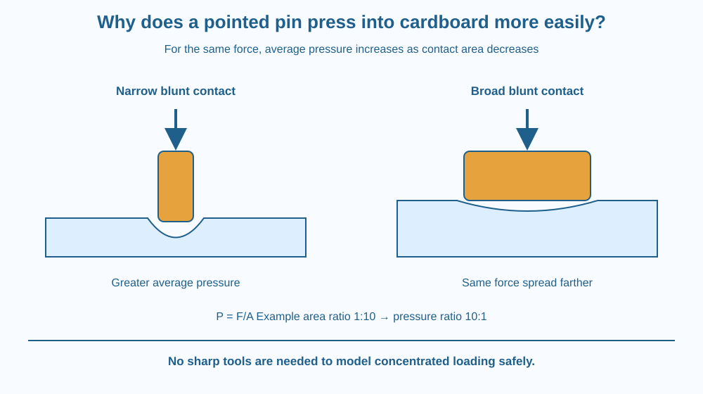

Explain why the same applied force can have different effects when spread over different contact areas. Define pressure for a solid contact and distinguish it from total force. Use a pointed-pin question to understand the principle without handling a sharp tool.
A pointed pin can enter cardboard more easily than the broad end of a similar object. The point does not necessarily deliver a larger total push. It concentrates the push over a smaller region.
At the opposite extreme, a broad support can help spread a load so it causes less local indentation. These examples appear different, but both connect total force with contact area.
The useful question is how much force acts per unit area at the contact, not simply whether an object is heavy or whether someone is pushing hard.
Pressure is force acting normally on a surface divided by the contact area over which it is distributed. In a simplified uniform contact model, P = F/A. The SI unit is the pascal, equal to one newton per square metre.
If the same force is distributed over a smaller area, the average pressure is greater. If the area is larger, average pressure is smaller. This comparison requires keeping the force the same; changing force and area together needs a separate calculation.
A pin point begins with a very small contact region. The material beneath it experiences a concentrated load and can deform or fail locally. Once the pin enters, the shape of the contact changes, so the initial simple pressure calculation is not a complete model of the whole process.
A broad end distributes the load over more material. Under otherwise comparable conditions, it may cause less local indentation. The result also depends on the stiffness, strength and structure of the cardboard or other surface.
This is why pressure alone cannot predict every outcome. A narrow soft object can bend instead of piercing, and a strong surface can resist a load that would indent a weak one. Contact geometry and material behaviour work together.
Consider an invented comparison: the same push is spread over areas of one and ten square centimetres. The smaller area has ten times the average pressure. No conversion is needed for this ratio because both areas use the same units.
If a calculation requires an absolute value in pascals, force must be in newtons and area in square metres. Confusing centimetres squared with metres squared can create a large numerical error. State units rather than writing an unexplained pressure number.
The lesson concerns contact pressure in solids. Earlier fluid examples used pressure changing with depth or being transmitted through confined liquid. The shared unit does not make the mechanisms identical: here the main design choice is how a load is distributed across a contact surface.
Draw the same downward force arrow above two blocks. Give one block a narrow base and the other a wide base. Use several small arrows at each contact to represent the distributed load.
In the narrow contact, pack the distribution into less area. In the broad contact, spread it farther. Keep the total represented force the same, so the drawing does not secretly change the quantity being compared.
Then replace the surface with a softer material and predict a greater indentation under similar conditions. That addition reminds you that pressure describes loading, while the visible response also depends on the receiving material.
The SVG compares narrow and broad blunt contacts pressing into a soft model surface. Equal large force arrows appear above both, while the labelled contact areas differ. The narrow contact shows a more local indentation.
A formula panel states force divided by area. An example ratio shows that reducing area tenfold increases average pressure tenfold when force remains fixed. The numbers are invented teaching values, not measured pin dimensions.
The pin itself appears only as a conceptual outline with a warning that the home activity uses blunt objects. The diagram makes no claim that pressure alone determines exactly when cardboard will fail.

A schoolbag's wider shoulder straps can distribute a load over more contact area, which can reduce average pressure on the shoulder. The total bag weight does not disappear; it is spread differently.
Broad feet or supports can reduce sinking into a soft surface. A narrow contact may instead be useful when a tool is designed to concentrate force. The choice depends on whether the goal is support or local deformation.
In each example, geometry and material properties matter alongside force. A strap that twists into a narrow band may lose some of its useful spreading effect even though its original width has not changed.
Use a clean soft sponge or folded towel and two blunt flat-ended objects with different contact areas. Do this with an adult. Do not use pins, nails, knives or sharpened pencils.
Your hand cannot guarantee equal forces, and the surface may recover imperfectly between trials. Record those limits. Stop if the objects slip or the material is damaged. The activity illustrates concentrated loading safely without trying to pierce cardboard.
A person presses twice as hard while also doubling the contact area. What happens to average pressure in the simple model? Use the ratio rather than assuming that more force always means greater pressure.
Now consider a flexible strap that touches only part of its apparent width. Which area belongs in the calculation: the full manufactured width or the area actually carrying the load? Explain why real contacts can require more care than a flat diagram.
How is average contact pressure calculated in the simple model?
Answer: C — Pressure is normal force per unit contact area.
Why can a narrow contact indent a soft surface more under the same force?
Answer: B — Smaller contact area increases average pressure when force is held equal.
Both force and contact area double. What happens to average pressure?
Answer: A — The ratio 2F divided by 2A equals the original F divided by A.
Design two supports for the same classroom load: one intended to minimise indentation in a soft surface and one intended to concentrate a gentle push. Use blunt shapes in both drawings.
Label force and contact area, then predict the pressure comparison under the same force. Include a sentence explaining why different receiving materials could respond differently even at the same average pressure. Do not propose testing a sharp object at home.
Spreading a load can reduce local pressure without reducing the total force at all. A comfortable support therefore does not need to make an object lighter; it can change where the load acts. This is a design opportunity visible in straps, furniture feet and many everyday supports.
For the same force, a smaller contact area creates greater average pressure; the material's response also depends on its strength and structure.